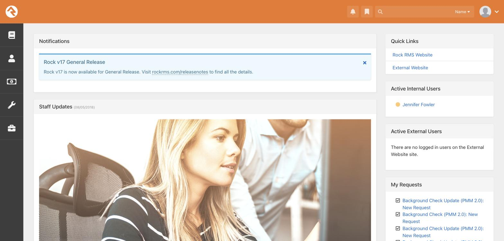
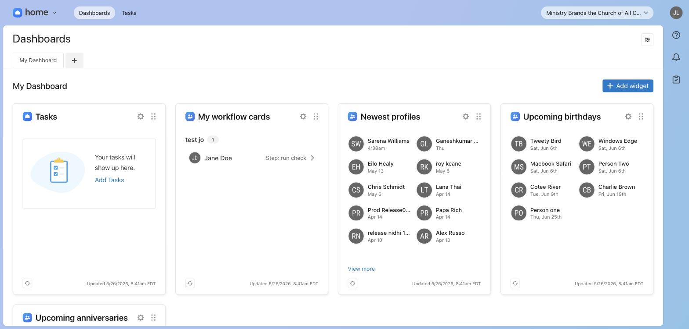
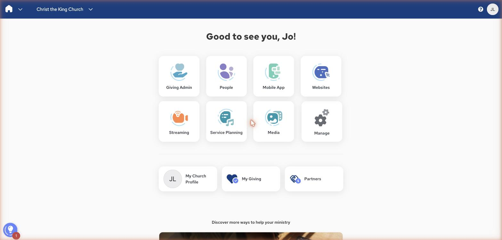
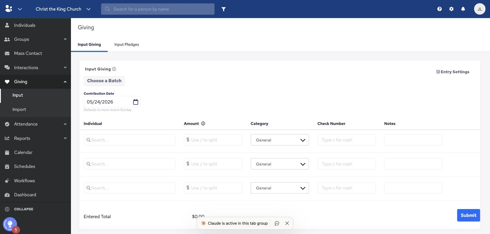
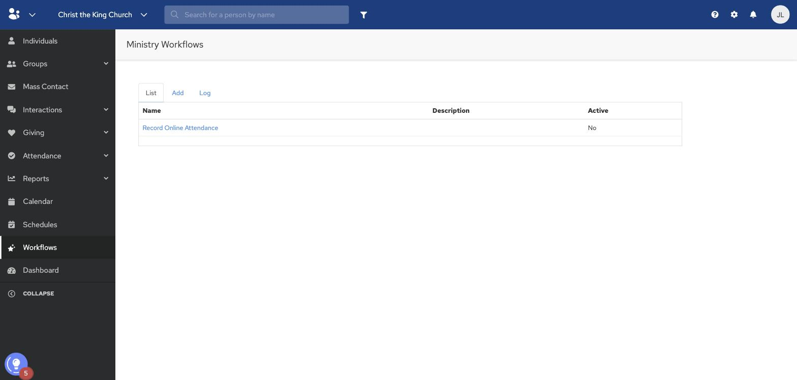
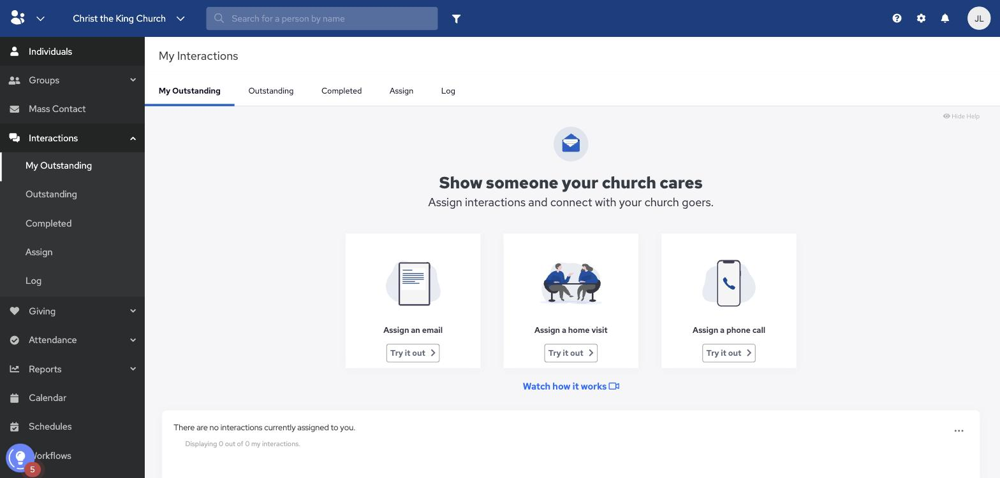
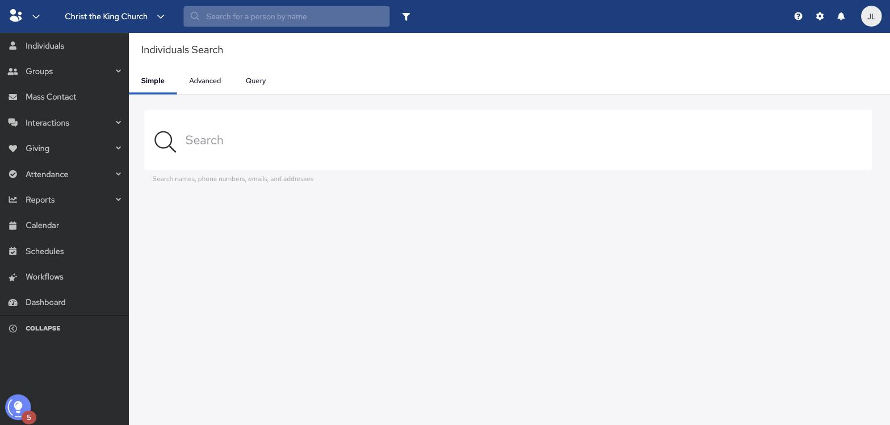

Faith communities across the US are run by people who chose purpose over salary, service over recognition, mission over everything.
Every single one of them is working with tools that force them to settle for far less than their mission deserves.
The more capable platforms are genuinely difficult to use without technical support. The friendlier ones feel warmer, easier to pick up, but they hit a ceiling when the mission grows.

Rock RMS — powerful, complex

Planning Center — friendlier, less powerful

Amplify — broad, but fragmented
Our customers are mission driven, resourceful and devoted. They adapt, they find workarounds, they make whatever they have work. And so, somewhere along the way the industry mistook their devotion for easy to please and decided they should settle for good enough.
Their mission deserves better. And nobody has made it their purpose to change that.
Until now.
NewCo is the one product positioned to redefine what mission-driven organisations expect from their software.
The breadth of features is there, the integrations, the customer base, the capabilities.
What's missing is what holds it all together.
The experience is fragmented and inconsistent. Patterns that look and behave differently from one module to the next. Interactions that work one way here and another way there. The more we scale, the more we add, the harder it gets to hold the experience together.
Home — distinct visual language and navigation from every other module.
People — different navigation patterns, different grid structure.

Giving — isolated from the rest of the platform. No shared data model.
The features don't speak to each other either. Flows that start in one module and break apart when they cross into another. No threading line, no end to end thinking, no workflow that follows the actual shape of the work being done.
This isn't a polish problem. It's the absence of the layer that makes everything feel reliable, intentional, and designed with a human in mind and their end to end needs and goals.

Workflows — automation lives in isolation, disconnected from the broader people context.

Interactions — engagement history with no unified view across modules.

People Search — fragmented profiles, no shared view across the platform.
Every push toward consistency runs into friction. Patterns get reinvented module by module. Handoffs are heavy and lossy.
The flaws in the product are a mirror of where the weight sits in the organisation. Product experience has never sat on the roadmap. Design and discovery have not been planned for.
Right now, shipping a genuinely good experience takes too much heroic effort to sustain. And heroic doesn't scale.
The problem isn't that any one person doesn't know what good looks like. It's that the same answer has to show up in forty different places, built by different people, across years of development. Process can't enforce that. Good intentions can't enforce that. The only thing that can is a shared, governed source of truth.
A design system is that source of truth. A platform layer that defines the components, the patterns, the rules, and the standards every team builds against. It is not free-flowing art. It is function, repeated reliably.
With the system in place, shipping a good experience stops being a battle and becomes the natural outcome of how the work gets done. Patterns hold. Decisions compound. Every new feature inherits the standard instead of starting from scratch.
That is what makes scaling at speed possible. That is what enables real innovation. That is what gets us outrunning the competition.
This is the opportunity in front of us.
To stop playing catch up and become the product that redefines the church software industry. The new standard the rest of the market measures itself against. The one that makes settling unnecessary for the missions that deserve it the most.
NewCo already has the breadth, the reach, and the customer base nobody else in this market has. What follows is the plan for building what turns that into category leadership.
See the planHow NewCo becomes the platform that redefines mission-driven software. Sequenced, resourced, and measurable.
Project Oak · Prepared by Jo Lopez Lluque
The first proves the model works. The second, landing alongside the rebrand already in motion, becomes the flagship moment when NewCo stops being one of the lot and becomes best in class.
The infrastructure that makes everything else possible.
Pipeline and contribution model documented and aligned with engineering. Token architecture cleaned up and governed: color, layout, motion. Figma upgraded for branching. Local versus global component model defined. Component acceleration workflow set up with Radix, tokens, and AI assistance. Baseline measurement framework defined.
Director of Product Experience leading. Senior Product Designer (Design Systems) hired and ramped. Dedicated engineer onboarded. Project manager holding process.
A working, governed Pathway foundation ready to scale. A baseline to measure against. A team in place and operational.
The pipeline ships from Figma to production cleanly. Contribution model documented and followed. Baseline captured for navigation, search, and one core flow.
The component library and the brand integration.
Tables, search, filters, tabbed navigation, page layouts, form and workflow components, dropdowns, selects, popovers, modals, the full input set. Module and org switcher revamp. New brand theme added as a parallel token branch and applied across components. Usability testing on the highest impact components.
The Phase 1 team, fully operational. Design system designer leading component work. Engineering shipping. Director negotiating priorities. Project manager holding roadmap. Coordination with marketing on brand integration.
A complete v1 component library with the new brand applied, tested, and ready for production launch.
Every new feature being built uses Pathway. Component reuse rate climbing. Implementation accuracy improving. Brand integration QA tested and ready.
Pathway and the rebrand ship together.
Production deployment of Pathway across the product. Rebrand applied simultaneously. Coordinated launch with marketing. Metrics captured against baseline. The before and after story documented.
The flagship moment. A measurably better product. NewCo V1 rebranded — dev-complete and ready to launch to market, pending commercialization, QA, and go-to-market readiness.
Capterra and G2 sentiment and review volume shifting. Experience-related support tickets dropping measurably. NPS moving against baseline. The launch read externally as a genuine product transformation, not a coat of paint.
The deeper transformation.
Core flows and organisms redesigned end to end. Account settings, permissions, profiles, user management, sign in, empty states, error handling, form and workflow systems. The complex, high impact areas where the product has always struggled most.
The full team, with additional dedicated designers brought in as the work expands, backed by launch data.
Continuous improvement to the deepest, most-used flows. Polish becomes real coherence.
Task completion climbing. Time on task dropping. Net revenue retention climbing as customers adopt more of the platform.
The rebrand is already in motion. The recommendation is that it ships alongside Pathway, not before it.
Rebrand first, and it's a coat of paint over a product still fragmented underneath. The promise breaks the moment users start clicking.
Pathway first without the brand, and the improvement is real but quiet. The story stays internal, invisible to the market.
Together, they are one moment. A new look, a new feel, a new way the product works, all at once.
Baselines for most of these don't exist today. Establishing them is part of Phase 1.
The Design System squad owns Pathway — the components, tokens, pipeline, and governance. The foundation every other tribe builds on.
The Platform Flows squad owns the cross-module end to end experiences. Profiles, permissions, account settings, sign in. The flows that cut across every module and belong to no single one.
The two squads work as one tribe — shared rituals, shared roadmap, tight coordination.
The core tribe and its designer become the Platform Flows squad. This is a move from siloed module work to owning the cross-platform flows that matter most.
The remit shifts toward service design. Designing end to end, with every module in mind, accounting for how flows cross over and impact each other. Everything they design for templated flows, permissions, or settings is built to be reused across the platform and contributed back into Pathway.
Their developers and development managers continue, now working against a shared, governed pipeline rather than a siloed repo. The same people, doing more connected, higher-leverage work.
Even with partial backing, this moves the platform forward and protects what we have.
The floor is real value. The full vision is the ceiling. No version of this leaves us worse off than today.
Role and resourcing confirmed. Hiring briefs published. Engineering capacity confirmed. Stakeholder kickoff. Marketing partnership initiated.
Pathway governance documentation begun. Token cleanup scoped and started. Figma branching upgrade initiated. Baseline framework drafted.
First baseline study scoped on navigation and search. Recruitment started. Component acceleration workflow set up.
First baseline metrics captured. Phase 1 progress reviewed. Hiring underway. Phase 2 scope confirmed and the engineering roadmap slot secured.
With those three confirmed, Phase 1 begins immediately.